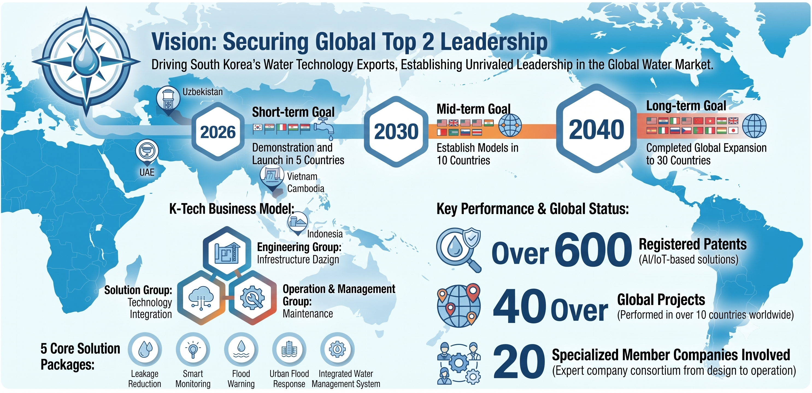

Designing a Sustainable Future
A Business Association of Water Infrastructure Experts
VISION & MISSION
Vision & Mission
Our core values for the future

Innovation
We lead innovation in the water infrastructure industry by adopting advanced water treatment technologies and smart water management solutions.
Collaboration
We strengthen industry-academia-research collaboration across the water sector to create synergy and drive mutual growth.
Sustainability
We build a sustainable water infrastructure ecosystem that protects our precious water resources and upholds our social responsibility.
Welcome Message
To the business leaders and experts driving Korea's water industry forward, welcome to the AWC Business Association. Our association was founded to go beyond a simple networking group — building, together, a steady foundation for growth even amid a fast-changing business environment, through genuine cooperation and information exchange among member companies across water supply and sewerage, water treatment, and water resource management.
Through regular seminars and forums, we quickly share the latest trends and policy changes in the water industry, and support meaningful business cooperation and networking among member companies. We also gather voices from the field to pursue policy proposals, doing our utmost to turn members' input into real institutional improvement.
Guided by the principle of transparent, trustworthy governance, we move forward in the belief that the growth of each member company is the growth of the Association as a whole. For a sustainable future where clean, safe water flows, we ask for your continued interest and participation as we build a better tomorrow together.